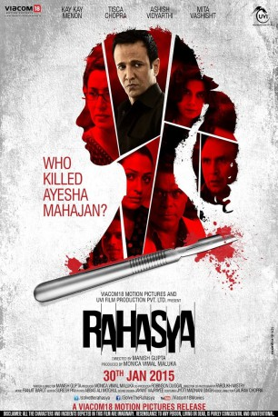

#10122 Dunkle Ahnung
Alternativ: Rahasya
 
 IMDB-Wertung: 7.7 / 10
IMDB-Wertung: 7.7 / 10  Metascore: 0
Metascore: 0 
Die 18-jährige Ayeasa wird im eigenen Schlafzimmer brutal ermordet. Der Verdacht fällt auf ihren Vater, den Arzt Sachin Mahajan (Ashish Vidyarthi). Der Hindu hatte sich heftig darüber aufgeregt, als er entdeckte, dass seine Tochter mit dem muslimischen Nachbarssohn schlief. Nur Bundespolizist Paraskar (sympathisch: Kay Kay Monon) hegt Zweifel an Sachins Schuld…
Jahr: 2015
Dauer: 108 Minuten
FSK: 12
Land: Indien Studio: Viacom18 Motion PicturesTonspuren:
Untertitel:
Auflösung: 1080p (1920x816) Größe: 2467 MB
Genre: Thriller, Mystery
Regisseur: Manish Gupta
Drehbuch: Manish Gupta, Manish Gupta
Soundtrack: Ranjit Barot
Darsteller:
- Kay Kay Menon als Sunil Paraskar
- Ashish Vidyarthi als Sachin Mahajan
- Tisca Chopra als Aarti Mahajan
- Mita Vasisht als Brinda Chhabria
- Ashwini Kalsekar als Remi Fernandes
- Ramesh Deo als Sachin's Father
- Usha Jadhav als
- Bikramjeet Kanwarpal als Hansal Chahbria
- Kakar Vinit als Inspector Dabbang
- Jitendra Barsiwal als Forensic Expert
- Farida Dadi als Mrs. Noorani
- Murari Kumar als Chotelal
- Manoj Maurya als Chetan Tiwari
- Nimai Bali als Santosh Malvade
- Sakshi Sem als Ayesha Mahajan
- Abhinav Sharma als Parvez
- Kunal Sharma als Riyaz Noorani
- Shivkumar Subramaniam als Mr. Noorani
- Ashish Wadde als Personal Banker 1
Datei: X:\2015(A-F)\Dunkle Ahnung (2015, FSK12, 1920x816).mkv seit 05.12.2018
Festplatte: HD 2015(A-Z)
 Es gibt insgesamt 143 Filme in der Gruppe '2015(A-F)'
Es gibt insgesamt 143 Filme in der Gruppe '2015(A-F)'